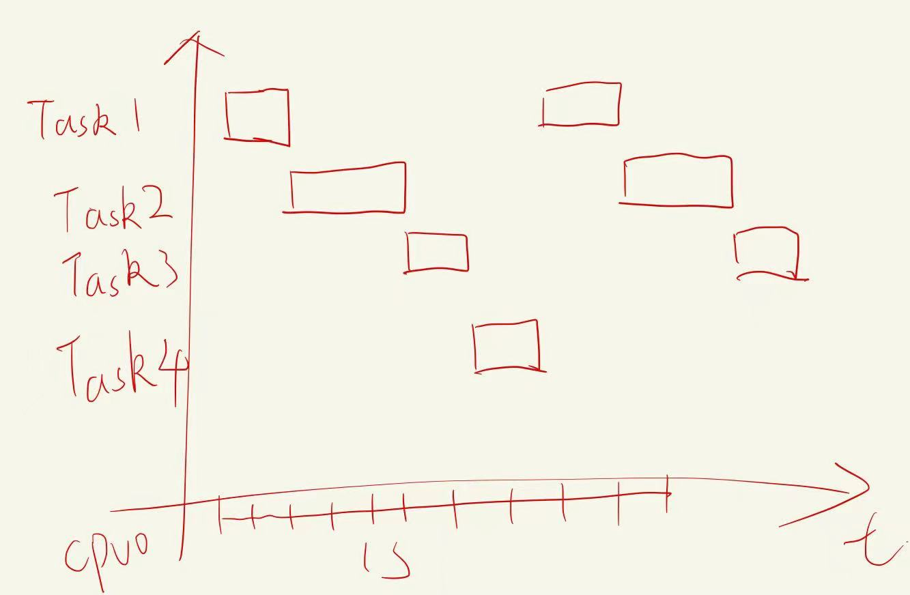
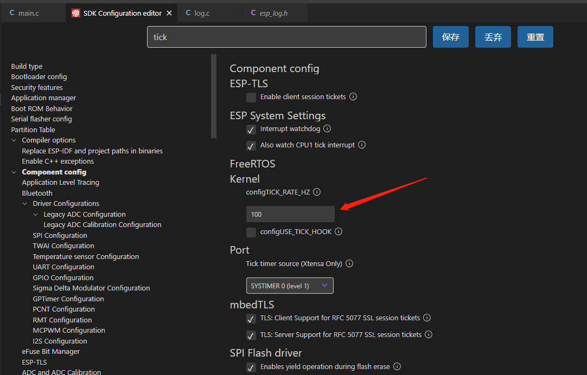
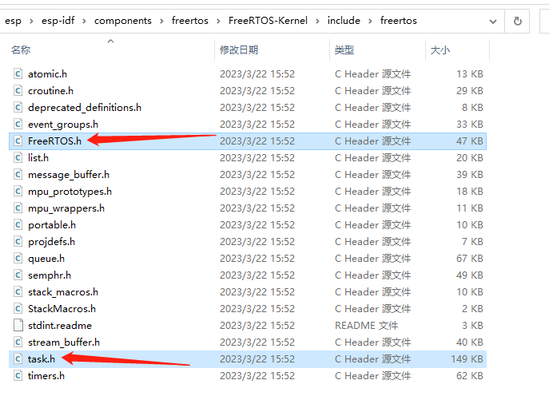
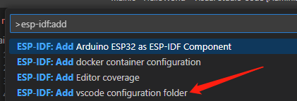
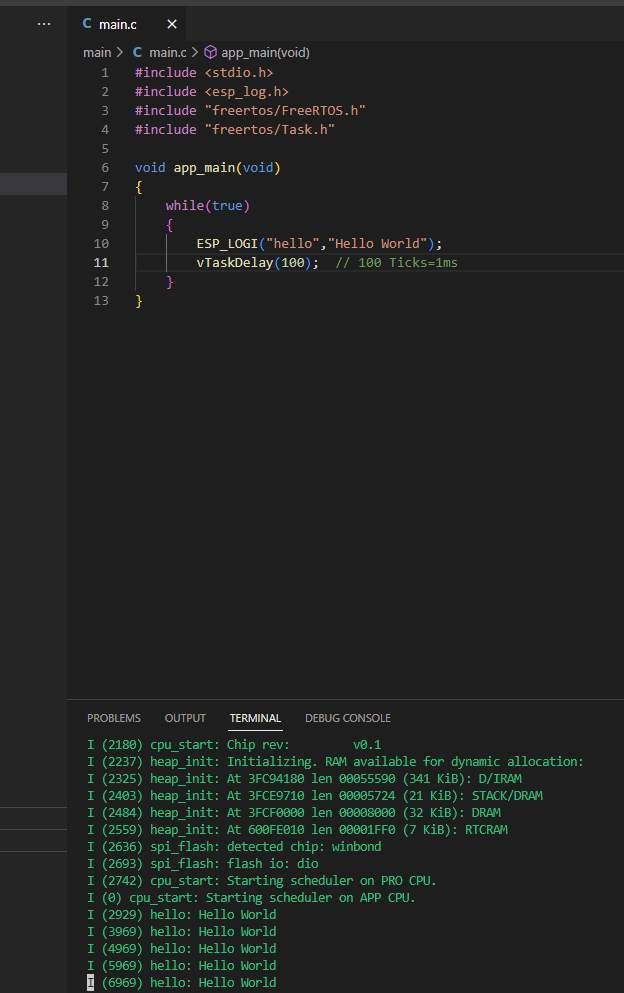
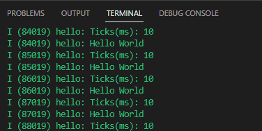

香蕉派 BPI-Leaf-S3的正确吃法之ESP-IDF创建循环
本系列旨在交流 ESP32-S3 硬件开发环境的搭建，通过一些基本的示例来展示怎么用 ESP-IDF (Espressif IoT Development Framework) 来安装、配置环境，并编译、下载固件至 BPI-Leaf-S3 开发板等步骤。如果有什么没提到或者有问题的，欢迎各位留言交流。
原文链接: https://qubot.org/2023/03/28/build-loop-in-esp-idf-with-bananapi-bpi-leaf-s3
作者：Qubot
参考文献：https://www.bilibili.com/video/BV1S3411f71Z/
前言
在Arduino中，有setup和loop两个函数，但是在ESP-IDF中没有loop函数，那在ESP-IDF中的循环是怎么实现的呢？这次我们来讨论一下
开始前的准备
必备硬件
- BPI-Leaf-S3开发板：购买链接（其他ESP32-S3板子也可以）

USB 数据线 (USB-A 转 Type-C)
电脑（Windows、Linux 或 macOS都可以）
必备软件
安装好的ESP-IDF环境，安装方法可以参考这里
VS Code
创建循环
在Arduino中，如果想要不停循环输出，只需把想要循环的内容放到loop里面就行，如下面例子所示，每1秒会输出一次Hello World：
void setup() {
// initialize serial communication at 9600 bits per second:
Serial.begin(9600);
}
void loop() {
// print out Hello World:
Serial.println("Hello World");
// delay between each print：
delay(1000);
}
但是在IDF中，是没有loop的，我们可以利用while或者for直接写成死循环：
whild(true)
{
}
或者
for(;;)
{
}
而输出可以利用pringf()或者上一篇文章所写的ESP_LOGI(),但是不能只写输出，还得加上延迟，在IDF中，没有delay(1000)这个函数，我们这里得用到freertos里的trick，这是我们需要了解一下分时的概念。
ticks的概念
FreeRTOS是一个实时操作系统，它会在一定时间内轮流执行所有任务，而宏观的来看，就像是在同时运行一样，而在FreeRTOS中，时间的最小单位就是1 tick。

在实际程序中，你可以分配每个任务执行多少个ticks,这个值是可以自己设定的，默认1个tick是10ms，这个在menuconfig中就可以设置，如下图所示，搜索tick即可看到

ticks的使用
要想使用ticks，那么必须引用ticks的库，类似于Arduino的libraries文件夹，IDF的库一般都在esp-idf安装目录的components文件夹，就是第一篇文章中的esp-idf安装目录，我的在C:\Users\Qubot\esp\esp-idf\components这里，在这里能看到，有一个freertos文件夹，而在这个目录下，就是FreeRTOS具体的库分类，打开FreeRTOS-Kernel\include\freertos（Mac和linux下可能不太一样）可以看到如下所有库，其中Task是我们delay要用到的，而FreeRTOS.h也是Task要调用的库。

在代码最前面加上
#include "freertos/FreeRTOS.h"
#include "freertos/Task.h"
如果最上面显示库没找到，那么可以Ctrl+Shift+P打开command，输入并选择ESP-IDF: Add vscode configuration folder导入库

在IDF中，delay用的是vTaskDelay()这个函数，所以完整的代码如下：
#include <stdio.h>
#include <esp_log.h>
#include "freertos/FreeRTOS.h"
#include "freertos/Task.h"
void app_main(void)
{
while(true)
{
ESP_LOGI("hello","Hello World");
vTaskDelay(100);
}
}
下载到板子上之后，会发现，串口会1s输出一次Hello World，下面每一行前面的括号内的数字为启动之后的毫秒数

ticks的高级用法
上面有提到，menuconfig里面能修改ticks的频率，那一旦我们改了频率，代码中的值就需要改变，这时我们就需要用到一个常量：portTICK_PERIOD_MS,我们把它输出出来：
ESP_LOGI("hello","Ticks(ms): %lu", portTICK_PERIOD_MS);
可以看到每个Ticks是10ms，也就是我们menuconfig中设置的tick频率100hz。

所以我们可以新建一个变量，例如
int delaytime = 1000;
然后将delaytime/portTICK_PERIOD_MS放到vTaskDelay函数内就行了，如下例子：
#include <stdio.h>
#include <esp_log.h>
#include "freertos/FreeRTOS.h"
#include "freertos/Task.h"
int delaytime = 1000;
void app_main(void)
{
while(true)
{
ESP_LOGI("hello","Ticks(ms): %lu", portTICK_PERIOD_MS);
ESP_LOGI("hello","Hello World");
vTaskDelay(delaytime/portTICK_PERIOD_MS); // 100 Ticks=1ms
}
}
以后不管menuconfig中怎么配置频率，想要delay多久，直接改delaytime这个函数就可以了
总结
循环在我们程序中非常常见，我们这篇文章回顾了循环的用法，简单了解了freertos的分时运行，以及如何使用vTaskDelay函数做出arduino中delay的效果。